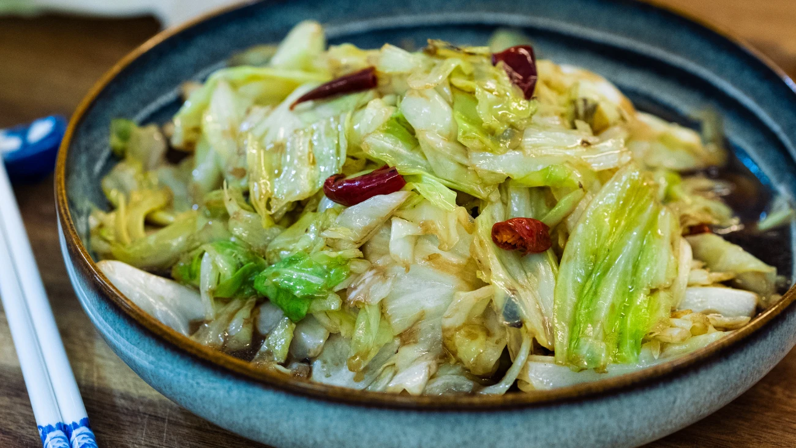

Cabbage stirfry recipe

Ingredients
- cabbage hand torn
- chinese dried red chilis
- protein of your choice
- soy sauce
- oyester sauce
- msg
- garlic
Steps
- first, get the wok piping hot
- and as always... longyao...
- add oil to the wok until it smokes
- add protein and cook until nearly cooked
- remove the protein and set aside
- add cabbage and cook until almost tender
- add soy sauce, oyster, msg, protein, and garlic on the edges of the wok
- stir to combine
- aaaand... out.